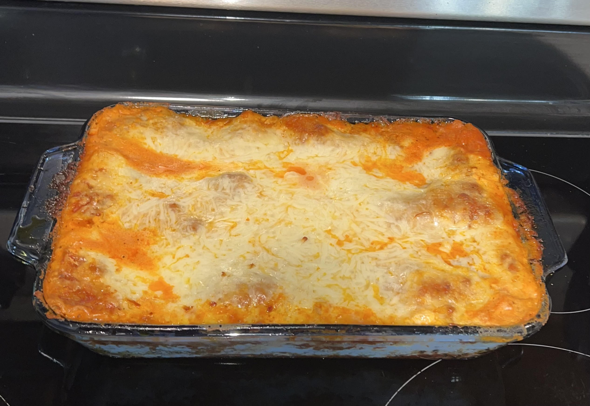

Home
Hearty Lasagna

This hearty lasagna recipe is an easy meal that will be sure to satisfy the entire family. With several layers of gooey cheese, flavorful sauce and noodles...you can be sure everyone will be going back for seconds!
Ingredients
- 1 lb ground beef
- 2 cups tomato juice
- 1 6oz can of tomato paste
- 1 McCormick zesty seasoning packet
- 1 TBSP salt
- 1 tsp pepper
- 1 TBSP garlic powder
- 1 TBSP onion powder
- 1 tsp italian seasoning
- 2 large eggs
- 15 oz ricotta cheese
- 8 oz feta cheese
- 16 oz mozzarella or italian blend cheese
- 8 oz parmesan cheese
- 1/2 lb dry lasagna noodles
How to Make Hearty Lasagna
- Start by making the sauce, season your ground beef with salt, pepper, onion, and garlic powder.